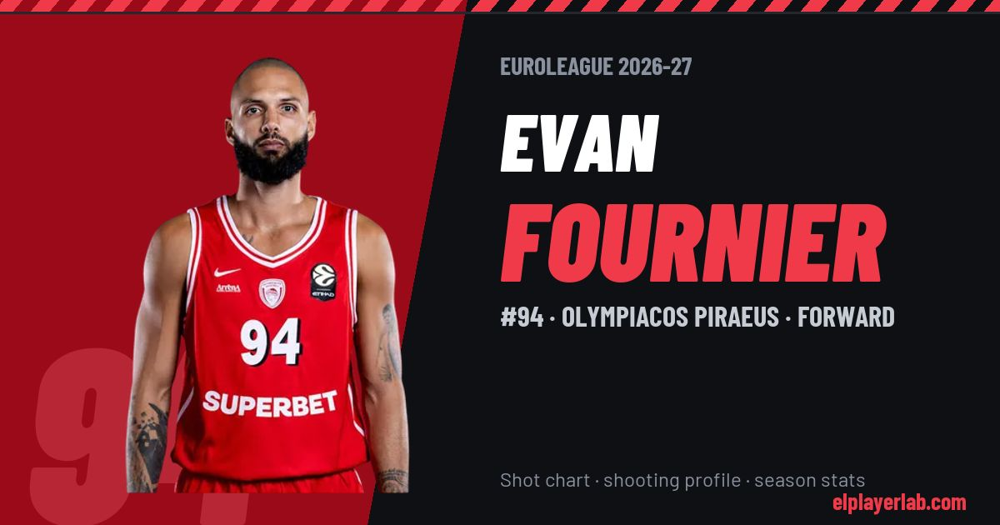

Olympiacos Piraeus · Euroleague 2026-27
Evan Fournier
#94 · Forward · Olympiacos Piraeus · 2026-27 · 4 games · 9.8 pts · 2.5 reb · 2.8 ast a game

- Number
- 94
- Position
- Forward
- Height
- 200 cm
- Weight
- 92 kg
- Born
- 1992-10-29
- Country
- France
Career
- Olympiacos 2024-2027
- Detroit Pistons (NBA) 2023-2024
- New York Knicks (NBA) 2021-2022
- Boston Celtics (NBA) 2020-2021
- Orlando Magic (NBA) 2014-2015
- Denver Nuggets (NBA) 2012-2013
- Poitiers 2010-2012
- Nanterre 92 2009-2010
Euroleague Player Lab: shot charts, shooting profiles and season stats for every player, rebuilt after every game.